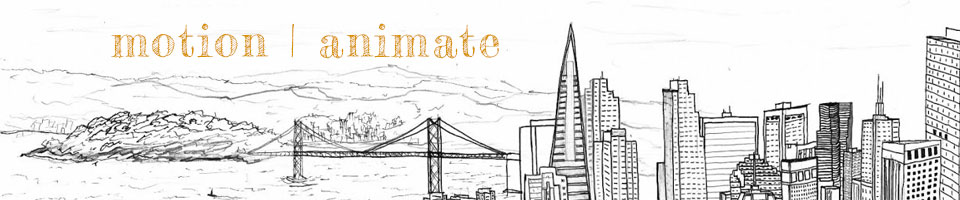

The motion project was so much fun! I have a serious appreciation for animators now that I have a tiny bit of experience making a little animation of my own. I am happy that I was able to accomplish the storyboard that I set out to animate– a little penguin named Gunter who decides to take a dip in the water and lands with a big splash at the end. It was so much work to animate, but it was definitely satisfying in the end!